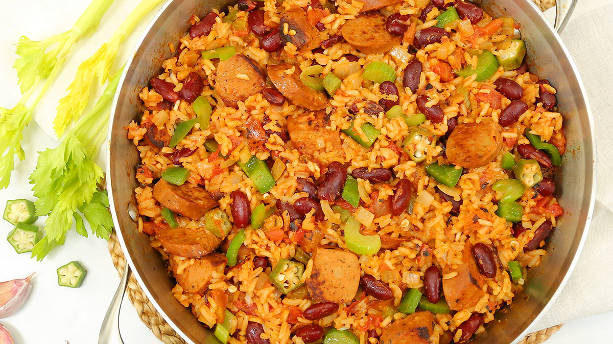

Vegan Jambalaya

Recipe Description
One Spring weekend around Mardi Gras, we found ourselves missing New Orleans and feeling some fomo from all of the Insta posts on our feed from friends who still live there. I had never tried, or even seen a veg jambalaya, but thought it was possible. It turned out to be even simpler than I thought it would be. If you have a favorite source of veg "shrimp" or "crawfish" you should definitely add it! That's not something we have access to in Columbus, OH (as far as we know).
Ingredient List
- 1 Pack Veg Cajun/Andiouille Sausage
- 2-3 Bell Peppers
- 1 Sweet Onion
- 1 Jalaepeño Pepper
- 4 Cloves of Garlic
- 4 Cups Vegetable Stock
- 1 14oz. Can Crushed Tomatoes
- 1 1/2 Cup of Wild Rice
- 3 Bay Leaves
- 2 Tbsp Cajun Seasoning (Tony Chachere's preferred)
- 1 tsp Thyme
- 1/4 tsp of Cayenne (or more to taste)
- 1 Cup of Sliced Okra
For Garnish
- Black Pepper
- Green Onion
- Hot Sauce
Ordered Directions
- Sear sliced sausages on both sides (and set aside).
- In a large, deep soup pot, sear peppers, onion and garlic on medium for 10 min in oil.
- Add vegetable stock, tomatoes, spices/seasonings/herbs.
- Add rice and bring to to a low boil on medium-high, stir occasionally.
- Reduce to simmer on med-low, simmer for 45 min, stir occasionally.
- Add okra and simmer another 15-20 min or until all liquid is absorbed.
- Add sausage and simmer until sausage is warm.
- Garnish with black pepper, green onion, and hot sauce to preference.
Have a laugh at these people trying to slice okra, and then maybe learn something about okra from the chef at the end.
50 People Try to Slice Okra (5:17)